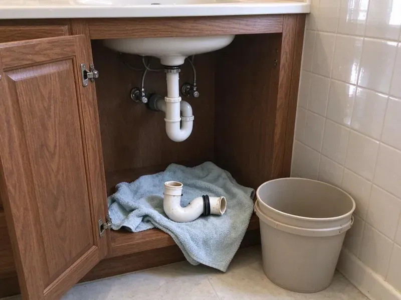

Emergency Plumbing Repair in St. Cloud, MN
Emergency plumbing repair in St. Cloud, MN for burst pipes, overflowing toilets, failed water heaters and main line backups.
- Stocked Service Trucks
- Fully Stocked Service Trucks
- Licensed Minnesota Plumbers
- Nights and Weekends

Need Emergency Plumbing Repair in St. Cloud, MN?
Our plumbers keep pipe, fittings and tank parts on the truck, so most emergencies get fixed in one visit.
Around-the-Clock Emergency Plumbers in St. Cloud, MN
CNV Plumbing runs emergency plumbing repair across St. Cloud, MN, nights and weekends included. The calls tend to repeat. We mostly see burst lines, toilets that won't stop, main line clogs and leaking tanks, and our trucks carry parts for each of those.
Some of what we do:
- Leaking water heater drain-down and repair
- Main line clogs cleared with cable machines and jetters
- Leaking water heater shutoff, drain-down and replacement

Additional Plumbing Repair Services in St. Cloud, MN
We offer expert plumbing repair services across St. Cloud, MN to fix leaks, restore flow, and keep your system running smoothly.


Customers
Why Choose CNV Plumbing for Emergency Plumbing Repair in St. Cloud, MN?
Our emergency repairs use standard, code-approved parts, not temporary patches, so your system keeps running after we leave.
- No Surprise Bills, You approve a written price before any emergency repair starts.
- Holidays Included, Our emergency crew works every day of the year, so you are not stuck until the office opens.
- Phone Guidance, We help you find and close the main shutoff or water heater valve right away.
Citywide Coverage
All of St. Cloud and the nearby communities are in our emergency area. Our techs know the streets. Plumbers who work here every day know the shortcuts, the gated communities and the older streets with no house numbers, which shaves time off the drive at night.
Experienced Team
Each technician is trained to assess damage fast and protect your home. They explain what happened. The plumber explains whether pressure, corrosion, a freeze or a failed part caused it, and how to keep it from recurring.
Safety-First Approach
Emergency repairs follow local St. Cloud and Minnesota plumbing codes like any other job. No shortcuts at night. Every repair gets approved fittings, proper support and a pressure test, so it is safe and passes inspection if required.
Trusted Certified St. Cloud Plumbing Services Professionals
At CNV Plumbing, we take pride in licensed, certified plumbing services throughout St. Cloud, MN. Credentials matter in this trade. Our plumbers hold recognized industry credentials, and they follow strict safety and quality rules on every repair, installation and maintenance call we run.
Call Us Now PHCC Plumbing Contractor Recognition
PHCC Plumbing Contractor Recognition Better Business Bureau (BBB) Accreditation
Better Business Bureau (BBB) Accreditation Angi Certified Pro
Angi Certified Pro ISO 9001 Quality Management Certification
ISO 9001 Quality Management CertificationAround-the-Clock Emergency Plumbing Repair in St. Cloud, MN
Toilet Overflows After Hours in St. Cloud, MN
Overflows happen at night more than you'd think. Close the supply stop first. We clear it with a closet auger, pull the toilet if the clog is deeper, and swap out a bad fill valve, flapper or wax ring. St. Cloud, MN homes get the mess cleaned up.

Gas Leak Emergency Service in St. Cloud
Smell gas? Get everyone outside. After you're out and the utility has been called, our licensed plumbers locate the leak, replace the bad fitting or pipe and test everything before turning the gas back on. St. Cloud gas work is always pressure tested.
Main Water Line Break in St. Cloud, MN
A broken main can flood the yard or leave you with no water. Shut it at the meter. With the water off at the meter, our crew finds the break with detection gear and digs one hole instead of trenching across the yard. Service is restored as soon as possible.
Burst Pipe Repair in St. Cloud
Insulating vulnerable pipes, draining outdoor faucets and keeping heat on in unoccupied homes avoid most freeze damage. We close the main, find the split and cut it out. The repair uses PEX, copper or PVC to match what is in the wall, and we check the pipe on each side of the break for more damage before closing it up. Wet drywall in your St. Cloud home gets opened to dry.
Slab Leak Emergency Repair in St. Cloud
Slab leaks often stay hidden until a floor turns warm or water comes up through grout. By then, it's urgent. We isolate the leaking line so the rest of the house has water, locate the break with acoustic gear and then lay out a spot repair, a reroute or a trenchless option with a price on each. Your St. Cloud property stays protected while you decide.
Water Heater Failure in St. Cloud, MN
No hot water on a weeknight is a problem, and a leaking tank is an emergency. We take both seriously. Our technicians test the elements, thermostat, gas valve and relief valve on tank units and run the error codes on tankless systems, then repair it that night or set up a replacement. Service is available across St. Cloud, MN.
Emergency Repair vs Scheduled Repair Cost in St. Cloud, MN
After-hours service costs more than a weekday visit. It's a night call. Often we can stop the damage that night and book the full repair for regular hours, saving you the after-hours rate on most of the work. We explain both options so you can decide.

Commercial Emergency Plumbing Repair in St. Cloud
Apartments, offices and stores cannot sit without water. Tenants notice right away. Restroom backups, grease clogs and failed heaters get handled quickly, and we work with managers so the shutoff hits as few units as possible.
Emergency Plumber Near You in St. Cloud, MN
Type 'emergency plumbing repair near me' in St. Cloud, MN and you want someone local who answers. CNV Plumbing picks up. Our plumbers are spread across the area each night, so the one closest to you gets the call and heads out with a truck already loaded for the common emergencies. Drive times are short.
Someone searching emergency plumbing repair near me needs a plumber who answers and shows up fast. We do both. Our local plumbers are ready day and night and arrive with the tools and parts to fix most problems on the spot, from a split supply line to a backed-up main.
CNV Plumbing at a Glance
- Fully licensed plumbing team covering St. Cloud, MN
- Same-day appointments and 24/7 emergency response
- Clear written estimates, no hidden fees
- 4.8-star rated by 501+ Minnesota customers
St. Cloud Map
St. Cloud Information
- Population
- 71,013
- Area codes
- 320/763/952
- Service area
- St. Cloud and communities within 40 miles
- Nearby
- Maple Grove, Coon Rapids, Plymouth, Brooklyn Park
Water heaters and boilers work hard through the heating season, which adds wear compared to milder climates. Weather like that is behind a lot of burst pipes, failed water heaters and sewer backups in St. Cloud homes, and the first few minutes decide how bad it gets.
Talk to a Plumber
Reach out to CNV Plumbing for reliable plumbing work done by licensed pros in St. Cloud, MN.
Our Specialized Plumbing Services in St. Cloud, MN
At CNV Plumbing, we handle the full list of plumbing services across St. Cloud, MN. From leak detection to full system installs, our team works fast and charges fair prices on homes and commercial properties alike. Explore our core services below:


How Emergency Plumbing Repair Works in St. Cloud, MN
Our emergency process is set up to contain damage quickly and restore your plumbing.
Call Us
Call (612) 712-9569 day or night and tell us what's happening. Dispatch gets the details and gives you an arrival window.
Plumber Heads Out
A licensed CNV Plumbing plumber with a fully loaded van heads to your St. Cloud address as soon as you hang up.
Diagnose and Repair
The plumber figures out what failed, gives you the price and fixes it so it holds.
Frequently Asked Questions About Emergency Plumbing Repair in St. Cloud
A simple clog cleared after hours might run $150 to $350. Bursts cost more. For a burst line or slab leak, expect $500 to $2,000 or more, driven by labor, access and the equipment needed. You'll get the price first.
Get everyone out, pets included. Avoid anything that sparks. From outside, call 911 or the utility first, then call us, and a licensed plumber will repair the leak once it's safe.
Emergency calls go to the top of the list. It depends on the night. Depending on call volume and distance, we usually have a plumber on the way within an hour or two of your call.
Response times depend on location and call volume, but we aim to reach emergency calls as quickly as possible. We give you an estimated arrival time when you reach us.
Burst pipes and severe leaks top the list. Backups count too. Overflowing toilets, main drain backups, gas leaks and a total loss of hot water in cold months all threaten your property or health, and those are the calls we send a plumber for right away.
Anything that threatens your home or health right now. A burst pipe qualifies. That includes severe leaks causing flooding, sewer backups, gas leaks and losing all water or all hot water, and the simple test is whether it can wait until morning without making things worse.
After-hours emergency calls may include a higher dispatch fee. We tell you the cost upfront before sending a plumber.
We repair water heaters from Rheem, Bradford White and Navien. We cover fixtures too. For fixtures, we service Moen, Delta, Kohler and more, and our trucks stock the common cartridges and kits.
What Our Customers Say About Our Plumbing Experts

Robert G.
The camera showed a full break in our clay sewer line near the street. CNV Plumbing replaced it with a trenchless pipe burst, so the only digging was two small pits in the yard. They let us watch the footage before and after.
Sewer Line Replacement · St. Cloud, MN
Jessica T.
We were adding a gas range in a kitchen remodel and needed a new line run from the meter. The plumber pulled the permit, ran the pipe through the crawl space, and had it inspected and approved within the week.
Gas Line Repair · Maple Grove, MNLaura S.
Our 40 gallon tank started leaking from the bottom after thirteen years. The tech hauled the old one out, set a new unit with a fresh expansion tank, and had hot water running in about four hours. He took the old tank with him too.
Water Heater Replacement · Coon Rapids, MN
Angela D.
Our sump pump quit during a storm and the water was an inch from the basement carpet. CNV Plumbing put in a new pump with a battery backup that same evening. We have had two heavy rains since. It kicked on both times.
Sump Pump · Plymouth, MNJames P.
Our restaurant had a slow leak at the hand sink that was rotting the cabinet base. CNV Plumbing came in at six in the morning before prep, replaced the trap and both supply lines, and was packed up before my first cook clocked in.
Commercial Plumbing · St. Cloud, MNPatricia H.
We had a slab leak that two other companies could not find. CNV Plumbing located it in under an hour with a listening device. They rerouted the line through the attic instead of breaking up the floor, so we kept our kitchen tile.
Slab Leak Repair · Blaine, MN